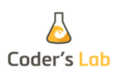

Witaj Warszawo!
Rails Girls comes to Warsaw for the third time! Join the free, two-day crash-course to the exciting world of building web applications with Ruby on Rails.
Applications are now closed.
Rails Girls aims to give tools for girls and women to build their ideas.
You learn designing, prototyping and coding by doing it with help from our coaches.
You want to help? We are looking for partners and sponsors. Email us.
Check out our previous Warsaw editions: Rails Girls Warsaw 2012 and Rails Girls Warsaw 2013.
created by Kinema Indigo
By Anksfoto.
If you have some photos form event send us the link at railsgirlswarsaw@gmail.com
| 14.15 - 15.00 |
Registration, pre-conference mixerGet to know the attendees a little bit before hand. |
|---|---|
| 15.00 - 16.00 |
Installation partyWe’ll install Ruby on Rails on your computer, so bring your laptop with you. |
| 17.00 - 18.00 |
Lightning talksKatarzyna Turbiasz-BugałaStaś Małolepszy Agnieszka Szóstek Tomasz Sielicki Piotr Sarnacki |
| 18.00 - 20.00 |
WorkshopLet's get coding! |
| 20.00 - |
MiddlepartyOpen for everyone, meet people interested in tech. |
| 9:00 - 10:00 |
Breakfast & tea/coffee |
|---|---|
| 10:00 - 13:00 |
WorkshopJumpstart your first web application |
| 13:00 - 13:30 |
Lunch |
| 13.30 - 13.45 |
Bentobox - Understanding Web AppsRecap of what we’ve learned and how it all fits together |
| 13.45 - 14.30 |
Lightning talksFelipe Elias PhilippHanna Sankowska Katarzyna Jarmułkowicz |
| 14.30 - 16.00 |
WorkshopExtend your application. |
| 16.00 - 16.30 |
Final lightning talksJarosław KopećOla Sitarska Magdalena Wójcik |
Application opening: January 20, 2014
Application deadline: February 7, 2014
Acceptances informed: February 15, 2014
Location: GammaFactory, ul. Hoża 51, Warsaw - Map
 GammaFactory Creative event space & tech coworking space with soul in a very center of Warsaw.
GammaFactory Creative event space & tech coworking space with soul in a very center of Warsaw.
 Rebased is a group of Ruby and Javascript developers focused on delivering quality code. Their tagline sums it all: "We code. And we're good at it."
Rebased is a group of Ruby and Javascript developers focused on delivering quality code. Their tagline sums it all: "We code. And we're good at it."
 Github Originally founded by Tom Preston-Werner, Chris Wanstrath, and PJ Hyett to simplify sharing code, GitHub has grown into the largest code host in the world.
Github Originally founded by Tom Preston-Werner, Chris Wanstrath, and PJ Hyett to simplify sharing code, GitHub has grown into the largest code host in the world.
Positionly is a must have tool for every website owner who's serious about the position in search engines. Positionly makes website tracking and analyzing simple, and something you’ll actually enjoy.
 The Software House develop, integrate and maintain complex dedicated and fully tested IT solutions such as web and mobile applications, desktop applications (web related) and websites with friendly user experience.
The Software House develop, integrate and maintain complex dedicated and fully tested IT solutions such as web and mobile applications, desktop applications (web related) and websites with friendly user experience.
 code quest You could think they're a bunch of guys working under the water but they actually dive into the code! It is a company using Ruby On Rails to provide well-crafted and beautifully designed web applications for smaller and bigger businesses.
code quest You could think they're a bunch of guys working under the water but they actually dive into the code! It is a company using Ruby On Rails to provide well-crafted and beautifully designed web applications for smaller and bigger businesses.
Coder's Lab Would you like to learn how to code using Ruby on Rails quickly and efficiently in a creative atmosphere? Yes? Then Coder`s Lab is a perfect place for you. During 9 weeks of our stationary course of programming you will gain all the knowledge that is required to start a new career as a junior programmer!
 EL Passion Turn your idea into Startup success! EL Passion develops Ruby on Rails web apps, iOS & Android apps, seamlessly combining intuitive design, functionality and rock solid stability.
EL Passion Turn your idea into Startup success! EL Passion develops Ruby on Rails web apps, iOS & Android apps, seamlessly combining intuitive design, functionality and rock solid stability.
Freeport Metrics Equipped with wicked tools, business experience and agile processes, they professionally design and build innovative custom web and mobile applications and business intelligence solutions.
 Touk is the team which makes IT better and simpler for big companies. They care a lot about software craftsmanship and have fun using new technologies. They solve problems.
Touk is the team which makes IT better and simpler for big companies. They care a lot about software craftsmanship and have fun using new technologies. They solve problems.


How much does the workshop cost? Nothing, it's free! You just need to be excited!
Who is this aimed for? Women of any age with basic knowledge of working with a computer. We’ve had people of all ages taking part. Most of the program is run in english and please bring your laptop.
How do you choose the attendees? We want a diverse group of people who are motivated and curious about learning.
Can men attend? Yes, but you need to be accompanied by an interested lady. Also, girls are given a priority.